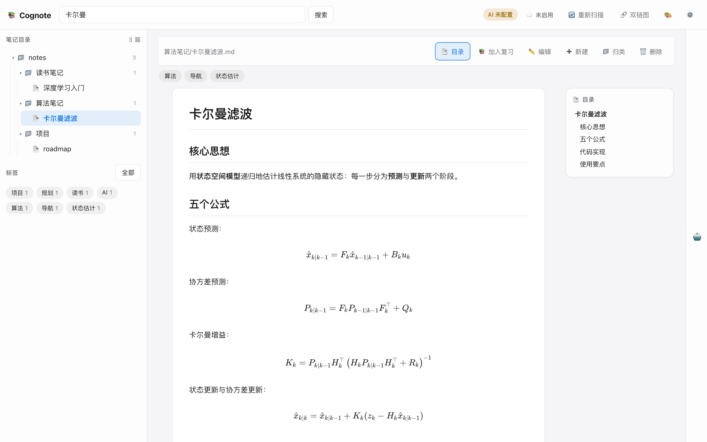
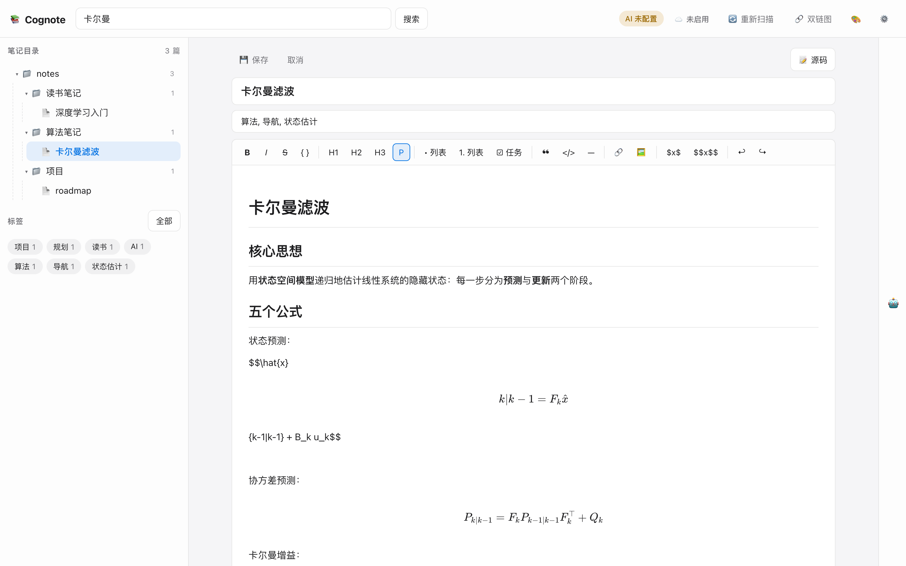
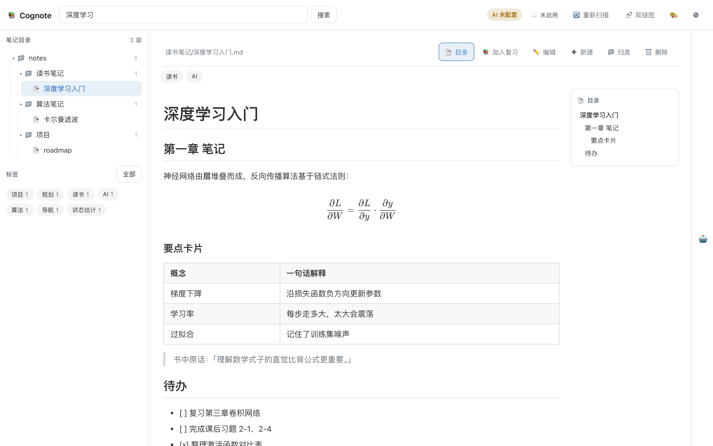
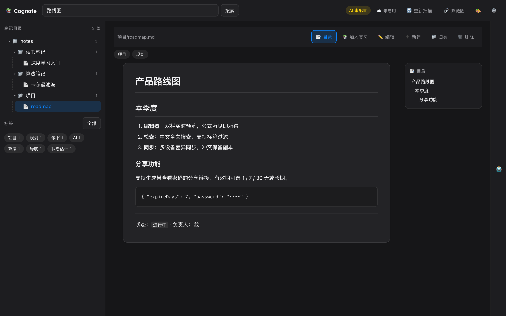

本地优先的 Markdown 智能笔记系统
自动归类的目录树、中文全文检索、AI 知识扩展、所见即所得编辑、LaTeX 公式、五套主题、带密码的笔记分享—— 笔记始终是磁盘上的普通 Markdown 文件。云同步为可选能力，由你自建同步服务，数据不出自己服务器。
绿色便携版，解压即用，无需安装 Node.js / 无任何依赖
一个为中文知识工作者设计的笔记系统：本地、快速、可扩展
递归扫描你指定的笔记目录，自动生成目录树与标签体系；支持多目录同时管理，笔记就是普通 .md 文件。
自建中文 bigram + 英文分词倒排索引，TF-IDF 加权排序、命中高亮，万级笔记毫秒级返回。
基于 TipTap / ProseMirror 的双栏编辑器，实时预览；随时切换 Markdown 源码模式；代码文件内置 Monaco（VS Code 内核）。
KaTeX 实时渲染行内与块级公式；从 Word / LaTeX 粘贴公式自动转换，兼容残缺定界符与裸公式，货币符号与代码不受影响。
跟随系统 / 浅色 / 深色 / 暖色 / Typora 白底 GitHub 风，一键切换，预览与编辑器排版一致。
一键扩展笔记、推荐分类、自动打标签、生成「一页纸复习摘要」与自测题。支持 DeepSeek / OpenAI / Claude / 智谱 / 通义 / Ollama 本地模型。
生成「链接 + 查看密码」的公开阅读页，有效期 1 / 7 / 30 天或长期；密码错误限流、可随时停用，附浏览统计。
双向差异同步、冲突自动保留副本、删除传播。同步服务端零依赖、开箱即用，需要你自行部署，笔记只存在你自己的服务器上。
附件统一管理；笔记中 figures/… 相对路径图片在预览、编辑器、PDF 导出与分享页全链路正常显示。
任意笔记一键导出 PDF，保留公式、代码高亮与图片。
把笔记加入复习计划，AI 生成摘要与自测题，间隔回顾巩固记忆。
后端仅用 Node.js 内置模块，无需 npm install；前端原生单页应用，启动即用、占用极低。
公式、代码、任务、表格、主题切换，开箱即有




绿色便携版 · 解压即用 · 内置 Node.js 运行时，无需任何环境依赖
① 解压到任意可写目录（桌面 / 文档均可）；
② Windows 双击 启动 Cognote.bat，macOS 双击 启动 Cognote.command，Linux 执行 ./start.sh；
③ 浏览器打开 http://127.0.0.1:8570，在「设置」里填写你的笔记目录即可。
包内自带 使用说明.txt。macOS 首次运行若提示无法打开，在终端执行 xattr -cr . 后重试。
三步进入你的本地知识库
选择你的平台下载，解压到任意可写目录。包内含程序、前端资源与 Node.js 运行时，无需安装任何软件。
# Windows（双击）
启动 Cognote.bat
# macOS（双击「启动 Cognote.command」，或终端执行）
./启动\ Cognote.command
# Linux
./start.sh看到 [Cognote] 已启动: http://127.0.0.1:8570 即成功，关闭窗口即停止服务。
浏览器打开 http://127.0.0.1:8570 → 「设置」→ 填写一个或多个存放 Markdown 的目录 → 保存。Cognote 自动扫描、建索引，目录树与全文检索立即可用。
Cognote 不提供任何官方云端：默认所有数据只存在你自己的电脑上，程序不会上传任何内容。 如果你需要在多台设备之间同步笔记，必须自行部署同步服务端（一个零依赖的 Node.js 程序，可跑在你自己的 VPS / 内网机器上）， 再在 Cognote「设置 → 云端同步」中填写你的服务器地址与 Token。
完整部署教程（含 systemd、nginx 反向代理、Token 配置、客户端配置、分享功能）见 → 自建云同步部署指南
笔记就是你指定目录下的普通 Markdown 文件，永远以磁盘文件为准。Cognote 默认不联网上传任何数据；只有你主动配置了 AI 服务（发送当前笔记内容用于扩展/摘要）或启用了自建云同步（同步到你自己的服务器）时才会发生网络请求。
不需要。下载的绿色便携包内置了 Node.js 22 运行时，解压即用。当然，如果你愿意，也可以从源码运行（需要 Node.js ≥ 22），后端零依赖、无需 npm install。
这是 macOS 对未签名应用的 Gatekeeper 提示。在解压目录的终端执行 xattr -cr . 再启动，或右键点击 启动 Cognote.command → 打开 → 确认。Windows 若出现 SmartScreen 提示，点「更多信息 → 仍要运行」。
同步服务端是开源零依赖程序，部署在你自己的服务器（VPS、内网机器、NAS 均可），不依赖任何付费服务，流量与存储都归你。没有服务器就无法使用云同步——本地功能完全不受影响。
每个分享都有独立的查看密码（错误 10 次锁定同 IP 10 分钟）、可设 1/7/30 天有效期，随时可停用或删除；分享范围精确到文件白名单，未列入分享的笔记不会被访问。
DeepSeek、OpenAI、Claude、Moonshot、智谱、通义千问、Ollama 本地模型及任意 OpenAI 兼容接口。AI 是可选增强，不配置时检索、编辑、公式、分享、同步等全部功能照常使用。
MIT 协议开源，可自由使用、修改、分发，包括商业用途。